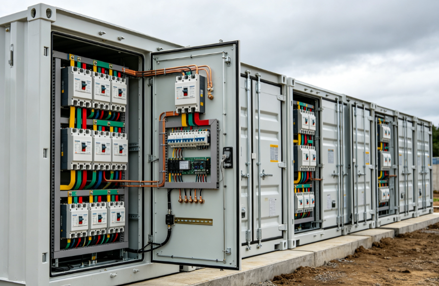
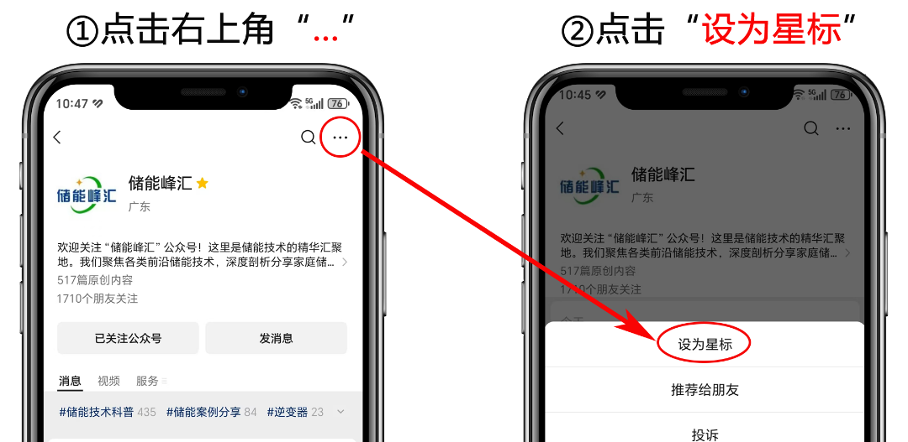
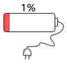

做储能项目、装户用/工商业储能，大家最关注电池、PCS、容量和收益，却很容易忽略一个不起眼但决定系统安全和使用寿命的小配件：浪涌保护器（SPD）。
很多人抱着省钱的心态省略不装，最后遭遇雷击、电网扰动，出现PCS烧毁、BMS失联、电池告警停机等问题，维修成本远超省下的配件钱。今天就用工程实操经验，讲清楚浪涌保护器是什么、储能到底需不需要装、以及核心安装点位，看完避开所有防雷误区。
一、浪涌保护器是什么？储能的“瞬时高压盾牌”
通俗来说，浪涌保护器（俗称防雷器、电涌保护器），就是电气设备的瞬时过压保护装置。
日常用电中，雷雨天气的雷电感应、电网合闸、大功率设备启停，都会产生瞬间的尖峰高压，这就是“电涌/浪涌”。这种高压持续时间极短，但冲击力极强，足以击穿精密电路板、烧毁设备模块。
而浪涌保护器常态下处于绝缘状态，完全不影响储能系统正常运行。一旦检测到线路超标浪涌，会在纳秒级快速导通，把冲击电流导入大地泄放，同时将电压钳位在设备安全承受范围内，守住设备安全底线。
工程上常用三级防护，分工明确：
一级T1：抵御直击雷大电流，用作整体进线第一道防护；
二级T2：最常用主力型号，拦截感应雷、电网操作浪涌；
三级T3：精细防护，保护通讯、监控等弱电精密设备。
二、储能系统能省掉SPD吗？答案：绝对不能
不少小型储能项目为压缩成本省去浪涌保护，这是典型的“捡小便宜、吃大亏”。
从规范层面：依据《建筑物防雷设计规范》《储能电站防雷接地技术要求》，户储、工商储、大型储能电站，交直流主回路、信号通讯回路，必须配置分级浪涌保护，这是项目验收、合规并网的硬性要求。
从实际工况层面：储能系统多为750V\~1500V高压直流，设备多露天布置、线缆敷设距离长，极易感应雷电电压。而且电池模组、PCS变流器、BMS主板都是高精度电力电子器件，耐压余量极低，一次无防护的浪涌冲击，就会造成不可逆损坏，严重时还会引发电池热失控，滋生安全隐患。
直白总结：SPD不是可选配件，是储能系统的标配安全装置，无论大小储能项目，都严禁省略。
三、储能SPD精准安装点位
很多项目不是没装，而是装错位置、装错型号，导致防护完全失效。三个核心安装位置，直接对照施工即可。
- 交流并网侧：系统第一道防线
安装位置：并网配电柜、箱变低压出线柜进线端
选型建议：T1+T2复合型交流SPD，三相四线全极防护
主要用于抵御电网侧雷电浪涌、合闸过电压，保护PCS交流端口和整套交流配电系统，隔绝外部电网带来的电压冲击。
- 直流侧：储能核心防护（重中之重）
直流回路是储能的核心，也是浪涌高发、损坏率最高的区域，分两处布设：
①电池簇直流输出端：紧贴电池柜出线口安装，线缆长度超30米必须加装，防止浪涌倒灌损坏BMS采集板和电芯；
② PCS直流输入端：绝大多数厂家将此处SPD纳入保修条件，缺失会直接脱保，可有效拦截直流线缆感应过压，保护变流器功率模块。
关键提醒：直流回路必须用专用直流SPD，严禁交流、直流防雷器混用，否则会直接失效甚至引发故障。
- 弱电信号侧：最容易被忽略的细节
安装位置：BMS通讯线、485总线、以太网、环境传感器接线端
雷电干扰不仅会冲击强电，还会干扰弱电信号，造成通讯乱码、电池压差误报、后台失联、系统无故停机。看似没有硬件烧毁，却会频繁影响储能正常运行，是运维高频问题源头。
四、安装红线：装错等于白装，务必避开
-
接线短、直、粗：接地引线尽量控制在0.5米以内，不绕线、不迂回，保证浪涌电流快速泄放；
-
整体等电位接地：电池架、机柜、PCS外壳统一接地，接地电阻控制在4Ω以内；
-
多级防护匹配：一、二、三级SPD保留合理间距，做好能量配合，避免后级器件被击穿烧毁；
-
配套保护齐全：SPD前端必须搭配熔断器或空开，器件老化短路时可及时断电，杜绝起火风险。
结语
储能运维和安全，从来都不靠“运气”。浪涌保护器单价不高，却是性价比最高的防护手段。省去一个SPD，省下的是小钱；一旦遭遇浪涌冲击，面临的是设备报废、停机亏损、安全隐患三重损失。
规范配置、精准安装浪涌保护器，既是满足并网验收的基本要求，也是守护储能系统长期稳定、安全运行的关键保障。
推荐：储能技术科普 储能 光伏发电 光伏并网系统 光伏 锂离子电池 储能结构设计 光伏组串 工商储能 锂电池 电池 家庭储能 储能案例分享 分布式光伏发电系统 逆变器 太阳能电池板计算 太阳能板
END
免责声明：本文为本人基于多年从业经验独立创作的原创内容，部分公开数据借助工具辅助检索核对，内容仅供参考，不构成专业指导或实操依据。本号所用的部分网络素材如涉及作品版权问题，请联系小编删除，无任何商业用途！
温馨提示
亲爱的读者朋友，受公众号推送排序规则影响，建议将本号设为星标⭐️，这样每天就能自动收到推送啦！****


☝关注公众号，持续分享行业干货！
更多储能知识，欢迎点击[储能技术科普]查阅
储能技术交流，公众号对话框回复【技术交流】
和群友一起分享行业心得。
收藏留存干货，持续跟随储能总工一起充电